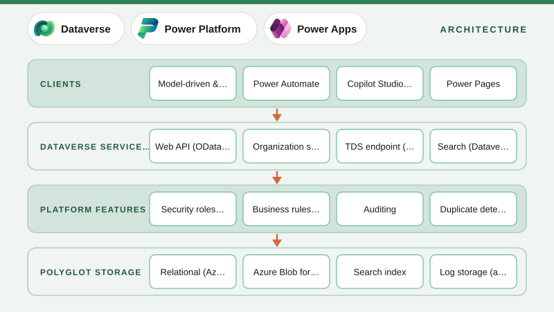

01
What is Microsoft Dataverse? Architecture, Capabilities and When to Use It
Dataverse explained, covering what it stores, the services behind it (relational, file, search, logs), tables and metadata, the security model at a glance, APIs, solutions and how it powers Power Apps, Power Automate, Copilot Studio and Dynamics 365.